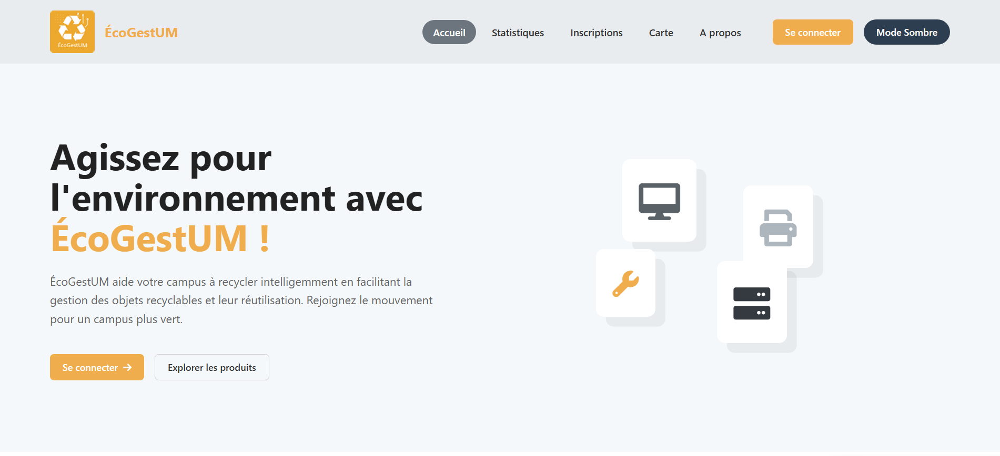
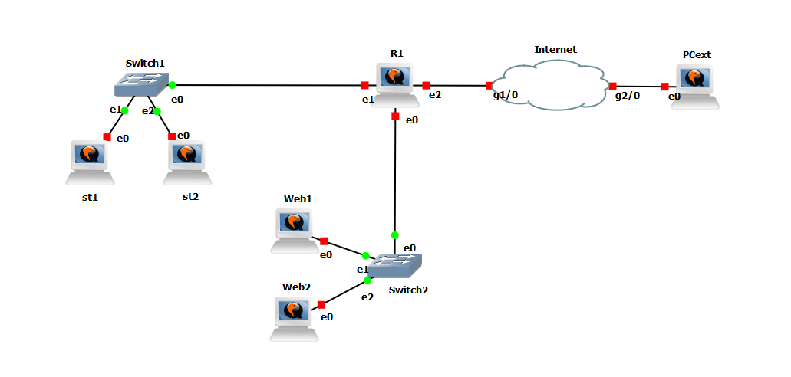
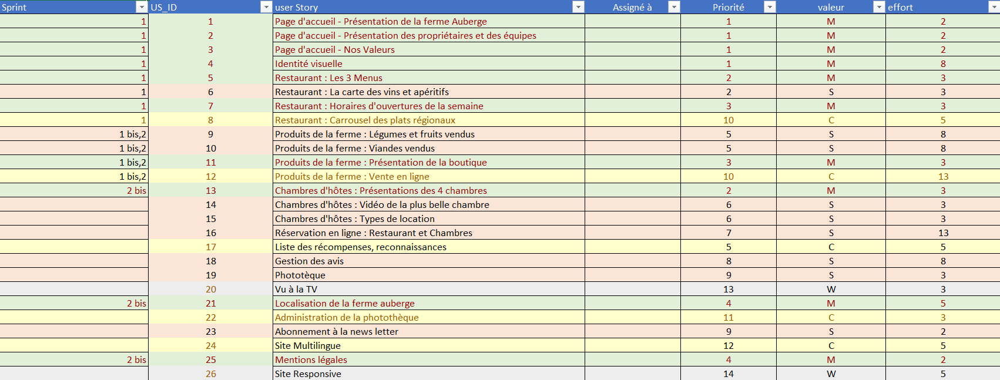
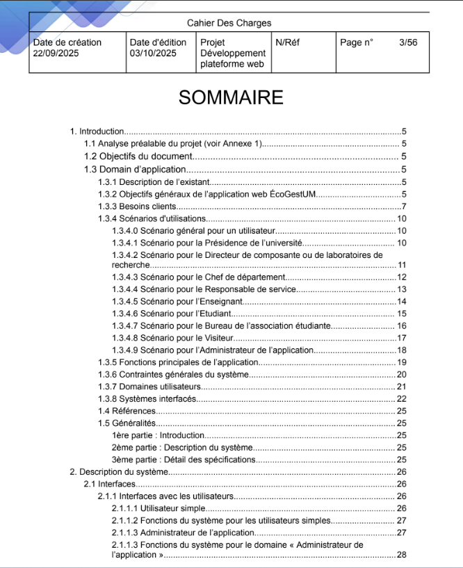

Portfolio - Année 2
Compétence 1 : Réaliser
| Apprentissage Critique (Niveau 2) | Non Acquis | En Cours | Acquis |
|---|---|---|---|
| AC21.01 | Élaborer et implémenter les spécifications fonctionnelles et non fonctionnelles à partir des exigences | Difficulté à dissocier les besoins métiers des contraintes techniques (performance, sécurité). | Spécifications définies mais implémentation grevée par une dette technique sur le non-fonctionnel. | Transposition complète des exigences en une architecture modulaire et fonctionnelle. |
| AC21.02 | Appliquer des principes d’accessibilité et d’ergonomie | Sémantique HTML ignorée et contrastes inadaptés (non-respect WCAG). | Usage de frameworks UI standards sans adaptation aux technologies d'assistance. | Interface conforme aux 8 critères ergonomiques et aux standards d'accessibilité (A11y). |
| AC21.03 | Adopter de bonnes pratiques de conception et de programmation | Architecture monolithique, responsabilités mélangées, absence de documentation. | Utilisation de fonctions mais sous-exploitation des patrons de conception (Design Patterns). | Code maintenable, modulaire et documenté, facilitant la reprise par un tiers. |
| AC21.04 | Vérifier et valider la qualité de l’application par les tests | Tests manuels uniquement, aucune automatisation. | Présence de tests unitaires mais lacunes sur les tests d'intégration des flux critiques. | Stratégie de test complète et robuste (Unitaires, Intégration, Bout-en-bout). |
Application dans des projets

Conception et Ergonomie Web (ÉcoGestUM) - AC21.01 & AC21.02
Concrétisation des exigences fonctionnelles via la plateforme ÉcoGestUM. L'interface a été conçue en appliquant strictement les principes d'ergonomie et d'accessibilité, garantissant une navigation intuitive pour la gestion des inscriptions et la visualisation cartographique.

L'utilisation de design patterns - AC21.03
Illustration de l'architecture logicielle modulaire via le pattern Décorateur (présenté ici à titre d'exemple). Ce choix de conception permet d'enrichir dynamiquement les fonctionnalités des objets sans altérer le code existant, assurant ainsi la maintenabilité et le respect du principe SOLID Open/Closed.
Compétence 2 : Optimiser
| Apprentissage Critique (Niveau 2) | Non Acquis | En Cours | Acquis |
|---|---|---|---|
| AC22.01 | Choisir des structures de données complexes adaptées au problème | Recours systématique aux tableaux simples, inefficace pour les recherches fréquentes (O(n)). | Utilisation de HashMaps/Sets sans maîtrise de la gestion des collisions. | Sélection optimale de structures (arbres, graphes) pour minimiser l'empreinte mémoire et les temps d'accès. |
| AC22.02 | Utiliser des techniques algorithmiques adaptées pour des problèmes complexes | Résolution par force brute inadaptée aux grands volumes de données. | Récursivité simple implémentée sans mémoïsation ou optimisation terminale. | Mise en œuvre d'algorithmes avancés (Programmation dynamique, Diviser pour Régner). |
| AC22.03 | Comprendre les enjeux et moyens de sécurisation des données et du code | Absence d'assainissement des entrées (failles XSS/SQLi potentielles). | Intégration de librairies de sécurité sans compréhension des mécanismes cryptographiques. | Application du principe "Security by Design" et validation rigoureuse des flux. |
| AC22.04 | Évaluer l’impact environnemental et sociétal des solutions proposées | Impact énergétique et stockage ignorés lors du développement. | Conscience des enjeux d'éco-conception mais absence de mesure concrète. | Optimisation active des ressources (CPU/Réseau) dans une démarche Green IT. |
Application dans des projets


Algorithmique et Sécurisation (Chiffre de Vigenère) - AC22.02 & AC22.03
J'ai conçu ce script pour chiffrer et déchiffrer des messages via la méthode de Vigenère. Ce projet m'a permis de mettre en pratique l'arithmétique modulaire pour sécuriser des données, tout en perfectionnant ma logique de manipulation de chaînes de caractères.
Compétence 3 : Administrer
| Apprentissage Critique (Niveau 2) | Non Acquis | En Cours | Acquis |
|---|---|---|---|
| AC23.01 | Concevoir et développer des applications communicantes | Incapacité à implémenter des Sockets ou protocoles HTTP/REST. | Appels API fonctionnels mais gestion défaillante de l'asynchronisme et des erreurs. | Développement d'architectures client-serveur robustes et asynchrones. |
| AC23.02 | Utiliser des serveurs et des services réseaux virtualisés | Développement limité aux environnements locaux, sans isolation. | Usage basique de VM, configuration réseau virtuelle absente. | Maîtrise de la conteneurisation (Docker) et déploiement sur le Cloud. |
| AC23.03 | Sécuriser les services et données d’un système | Services exposés sans pare-feu ni contrôle d'accès. | Mots de passe stockés mais politique de sécurité (rotation, salage) insuffisante. | Durcissement système (hardening) et gestion fine des listes de contrôle d'accès (ACL). |
Application dans des projets

Développement d'une application Web (Musicode) - AC23.01
Mise en œuvre d'une architecture client-serveur asynchrone pour l'application Musicode. Cette interface de connexion gère les échanges sécurisés avec le backend, assurant une expérience utilisateur réactive lors de l'authentification.

Architecture et Virtualisation Réseau - AC23.02
Conception et simulation d'une infrastructure réseau complète sous GNS3. Ce schéma illustre la mise en place de VLANs, le routage inter-réseaux et la configuration de services virtualisés, démontrant une expertise dans le déploiement d'environnements complexes et isolés.
Compétence 4 : Gérer
| Apprentissage Critique (Niveau 2) | Non Acquis | En Cours | Acquis |
|---|---|---|---|
| AC24.01 | Optimiser les modèles de données de l’entreprise | Schéma non normalisé, source d'anomalies de mise à jour. | Modèle 3NF respecté mais absence d'indexation pour les gros volumes. | Schémas performants (indexation, partitionnement) et évolutifs. |
| AC24.02 | Assurer la sécurité des données (intégrité et confidentialité) | Accès direct aux tables, sans rôles ni vues restrictives. | Intégrité des données assurée mais traçabilité (logs) manquante. | Politiques complètes : sauvegarde, chiffrement et gestion granulaire des droits. |
| AC24.03 | Organiser la restitution de données à travers la programmation et la visualisation | Données brutes non formatées, inexploitables pour la décision. | Visualisations graphiques statiques, sans interaction utilisateur. | Conception de tableaux de bord (Dashboards) dynamiques alimentés par API. |
| AC24.04 | Manipuler des données hétérogènes | Incapacité à traiter les formats JSON/XML ou les bases NoSQL. | Parsing de fichiers réussi mais fusion de sources multiples difficile. | Intégration fluide de données SQL et NoSQL dans un même flux applicatif. |
Application dans des projets


Modélisation et Implémentation Relationnelle - AC24.01 - AC24.02
De la conception à l'exploitation optimisée. Le Modèle Conceptuel de Données (MCD) garantit une structure normalisée, tandis que le script de création de vue (View) permet de simplifier l'accès aux données complexes et de renforcer la sécurité en masquant la structure physique sous-jacente.
Compétence 5 : Conduire
| Apprentissage Critique (Niveau 2) | Non Acquis | En Cours | Acquis |
|---|---|---|---|
| AC25.01 | Identifier les processus présents dans une organisation | Déconnexion totale entre l'application technique et le métier du client. | Identification des processus mais formalisation (BPMN) absente. | Modélisation exhaustive des flux métiers supportés par la solution. |
| AC25.02 | Formaliser les besoins du client et de l'utilisateur | Notes éparses, absence de backlog ou de priorisation. | User Stories rédigées mais critères d'acceptation trop vagues. | Product Backlog complet, priorisé et validé par les parties prenantes. |
| AC25.03 | Identifier les critères de faisabilité d’un projet informatique | Estimations intuitives sans analyse des risques ou des ressources. | Étude de faisabilité technique réalisée, volets financiers/délais oubliés. | Analyse de faisabilité multidimensionnelle (Technique, Humaine, Temporelle). |
| AC25.04 | Définir et mettre en œuvre une démarche de suivi de projet | Aucun outil de suivi (Jira/Trello) ni rituel d'équipe. | Utilisation d'un Kanban sans mise à jour de la vélocité. | Pilotage Agile complet (Burndown charts, revues de sprint). |
Application dans des projets

Pilotage de projet avec la méthode Kanban (AC25.04)
Gestion de flux de travail via la méthode Kanban. Ce tableau Trello offre une visualisation temps réel de l'avancement du projet, optimisant la distribution des tâches et la réactivité de l'équipe face aux imprévus.


Formalisation des besoins et suivi de vélocité (AC25.02 & AC25.04)
Pilotage de la performance projet. Le Product Backlog assure la structuration et la priorisation des fonctionnalités, tandis que l'analyse du BurnDown Chart permet de mesurer la vélocité de l'équipe et d'ajuster les prévisions de livraison.
Compétence 6 : Collaborer
| Apprentissage Critique (Niveau 2) | Non Acquis | En Cours | Acquis |
|---|---|---|---|
| AC26.01 | Comprendre la diversité, la structure et la dimension de l’informatique dans une organisation | Ignorance du rôle des services connexes (DSI, Cloud) dans le projet. | Vision globale acquise mais méconnaissance des cadres juridiques prestataires. | Cartographie claire des parties prenantes et de leurs périmètres respectifs. |
| AC26.02 | Appliquer une démarche pour intégrer une équipe informatique | Difficultés avec Git (workflow linéaire) et la communication technique. | Participation aux Pull Requests mais passivité dans la revue de code. | Maîtrise du Gitflow et intégration proactive dans l'équipe de développement. |
| AC26.03 | Mobiliser les compétences interpersonnelles pour travailler dans une équipe | Passivité ou attitude conflictuelle lors des arbitrages techniques. | Collaboration correcte mais gestion difficile des imprévus/conflits. | Écoute active, force de proposition et médiation efficace. |
| AC26.04 | Rendre compte de son activité professionnelle | Rapports techniques obscurs ou trop sommaires pour le public visé. | Écrits corrects mais présentations orales manquant de clarté. | Restitution synthétique et adaptée à l'audience (Français/Anglais). |
Application dans des projets

Élaboration collaborative du Cahier des Charges - AC26.01 & AC26.04
Synthèse des besoins multi-acteurs dans le Cahier des Charges. Ce livrable formalise la convergence entre les attentes des utilisateurs finaux et les contraintes techniques, résultat d'une démarche d'écoute active et de médiation auprès des différentes parties prenantes.

Intégration et Valeurs d'Équipe (FORCE) - AC26.02
Adoption des valeurs FORCE (Focus, Ouverture, Respect, Courage, Engagement) pour structurer la collaboration. Cette charte commune a facilité mon intégration en définissant un cadre de travail sain, favorisant l'ouverture aux critiques constructives et le courage dans la prise de décision collective.
Culture Générale
Histoire de l'Architecture
Architectures et Époques : Étude chronologique des différents styles architecturaux (Roman, Gothique, Renaissance, Moderne, etc.), permettant d'identifier les caractéristiques techniques et esthétiques propres à chaque période historique.